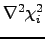
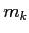
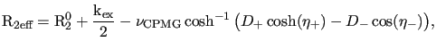

Next: The universal solution U Up: The new model-free optimisation Previous: The model-free models Contents Index
The most general form of Brownian rotational diffusion of macromolecules is the diffusion of an ellipsoid, a diffusion also labelled as asymmetric or fully anisotropic. This diffusion tensor can be fully specified by the geometric parameters
 ,
,
 , and
, and
 , the eigenvalues of the tensor, as well as three orientational parameters, the Euler angles
, the eigenvalues of the tensor, as well as three orientational parameters, the Euler angles  ,
,  , and
, and  . The diffusion equation for an ellipsoid was derived using the reasoning of Einstein (1905) in the two papers of Perrin (1934) and Perrin (1936). Following this, Favro (1960) unknowingly derived the same equations as presented in Perrin (1936) using a pseudo quantum mechanical approach. Borrowing heavily from Perrin (1936), Woessner (1962) derived the correlation function relevant for NMR relaxation of a bond vector rigidly attached to an ellipsoid. However these equations are not fully simplified and the parameter set {
. The diffusion equation for an ellipsoid was derived using the reasoning of Einstein (1905) in the two papers of Perrin (1934) and Perrin (1936). Following this, Favro (1960) unknowingly derived the same equations as presented in Perrin (1936) using a pseudo quantum mechanical approach. Borrowing heavily from Perrin (1936), Woessner (1962) derived the correlation function relevant for NMR relaxation of a bond vector rigidly attached to an ellipsoid. However these equations are not fully simplified and the parameter set {
 ,
,
 ,
,
 ,
,  ,
,  ,
,  }, the eigenvalues and Euler angles defining the tensor, is not optimally constructed for minimisation. A parameter shift to the set {
}, the eigenvalues and Euler angles defining the tensor, is not optimally constructed for minimisation. A parameter shift to the set {
 ,
,
 ,
,
 ,
,  ,
,  ,
,  }, whereby the three geometric parameters are respectively the isotropic, anisotropic, and rhombic components of the diffusion tensor, drastically simplifies optimisation and is how the diffusion tensor is implemented within relax.
}, whereby the three geometric parameters are respectively the isotropic, anisotropic, and rhombic components of the diffusion tensor, drastically simplifies optimisation and is how the diffusion tensor is implemented within relax.
When two of the eigenvalues of the diffusion tensor are equal the molecule diffuses as a spheroid. This is also called axially symmetric anisotropic diffusion and can be described by the two geometric parameters
 and
and
 together with the polar angle
together with the polar angle  and azimuthal angle
which define the unique axis of the diffusion tensor. Two classes of spheroid can be distinguished dependent on the relative values of the eigenvalues - the prolate and oblate spheroids. By using parametric constraints, both tensor types can be optimised within relax.
and azimuthal angle
which define the unique axis of the diffusion tensor. Two classes of spheroid can be distinguished dependent on the relative values of the eigenvalues - the prolate and oblate spheroids. By using parametric constraints, both tensor types can be optimised within relax.
The simplest form of diffusion occurs when all three eigenvalues are equal and the molecule diffuses as a sphere. This isotropic rotation can be characterised by the single parameter
 which is related to the global correlation time by the formula
1/
which is related to the global correlation time by the formula
1/ = 6
= 6 (Bloembergen et al., 1948).
(Bloembergen et al., 1948).
![[*]](crossref.png) ). These are simply models m0
to m9
with the local
). These are simply models m0
to m9
with the local
where the eigenvalues of the matrix Q are defined as Qx = ( , Qy = ( , and Qz = ( . The diffusion tensor is then found by linear least-squares fitting.